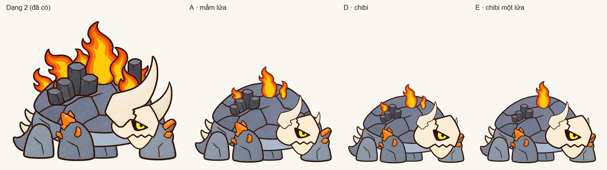
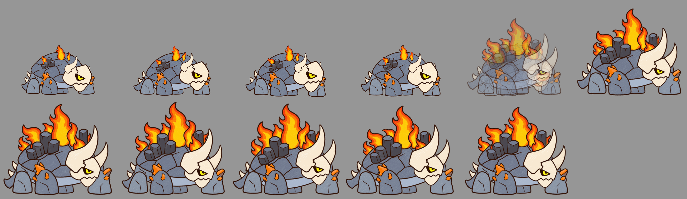

Dựng không cần gen (Codex hết hạn mức tới 18:30): dùng lại mảnh của dạng 2, xếp lại tỉ lệ. Cùng xương, cùng clip với dạng 2. Hình theo đúng tỉ lệ cỡ trong game.
D · chibi: đầu rất to so với thân, sừng chỉ còn mầm, ba ngọn lửa nhỏ, cụm cột đá thấp, cả con nhỏ hơn trong game (cỡ 0,78; dạng 2 cỡ 1,1). E · như D nhưng chỉ một ngọn lửa. A là bản trước để so.

